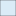

<!doctype html>
<html lang="en">
    <head>
        <meta charset="utf-8">
        <meta http-equiv="X-UA-Compatible" content="IE=edge">
        <meta name="viewport" content="initial-scale=1,user-scalable=no,maximum-scale=1,width=device-width">
        <meta name="mobile-web-app-capable" content="yes">
        <meta name="apple-mobile-web-app-capable" content="yes">
        <link rel="stylesheet" href="css/leaflet.css">
        <link rel="stylesheet" href="css/qgis2web.css">
        <link rel="stylesheet" href="css/leaflet-search.css">
        <link rel="stylesheet" href="css/leaflet-measure.css">
        <style>
        html, body, #map {
            width: 100%;
            height: 100%;
            padding: 0;
            margin: 0;
        }
        </style>
        <title>Soil Survey of Alberta</title>
    </head>
    <body>
        <div id="map">
        </div>
        <script src="js/qgis2web_expressions.js"></script>
        <script src="js/leaflet.js"></script>
        <script src="js/leaflet.rotatedMarker.js"></script>
        <script src="js/leaflet-hash.js"></script>
        <script src="js/Autolinker.min.js"></script>
        <script src="js/leaflet-measure.js"></script>
        <script src="js/leaflet-search.js"></script>
        <script src="data/Alberta0.js"></script>
        <script src="data/SoilSurveyIndex1.js"></script>
        <script>
        var highlightLayer;
        function highlightFeature(e) {
            highlightLayer = e.target;

            if (e.target.feature.geometry.type === 'LineString') {
              highlightLayer.setStyle({
                color: '#ffff00',
                fillOpacity: 0.5
              });
            } else {
              highlightLayer.setStyle({
                fillColor: '#ffff00',
                fillOpacity: 0.1
              });
            }
        }
        var map = L.map('map', {
            zoomControl:true, maxZoom:28, minZoom:1
        }).fitBounds([[48.6826699882,-128.155654682],[60.2381691619,-101.846641149]]);
        var hash = new L.Hash(map);
        map.attributionControl.addAttribution('<a href="https://github.com/tomchadwin/qgis2web" target="_blank">qgis2web</a>');
        
            var title = new L.Control();
        title.onAdd = function (map) {
            this._div = L.DomUtil.create('div', 'info');
            this.update();
            return this._div;
        };
        title.update = function () {
            this._div.innerHTML = '<h2>Soil Survey of Alberta</h2>';
        };
        title.addTo(map);
            
            var measureControl = new L.Control.Measure({
            primaryLengthUnit: 'feet',
            secondaryLengthUnit: 'miles',
            primaryAreaUnit: 'sqfeet',
            secondaryAreaUnit: 'sqmiles'
        });
        measureControl.addTo(map);
        var bounds_group = new L.featureGroup([]);
        var basemap0 = L.tileLayer('http://{s}.www.toolserver.org/tiles/bw-mapnik/{z}/{x}/{y}.png', {
            attribution: '&copy; <a href="http://openstreetmap.org">OpenStreetMap</a> contributors, <a href="http://creativecommons.org/licenses/by-sa/2.0/">CC-BY-SA</a>',
            maxZoom: 28
        });
        basemap0.addTo(map);
        function setBounds() {
        }
        function pop_Alberta0(feature, layer) {
            layer.on({
                mouseout: function(e) {
                    for (i in e.target._eventParents) {
                        e.target._eventParents[i].resetStyle(e.target);
                    }
                },
                mouseover: highlightFeature,
            });
        }

        function style_Alberta0_0() {
            return {
                pane: 'pane_Alberta0',
                opacity: 1,
                color: 'rgba(0,0,0,1.0)',
                dashArray: '',
                lineCap: 'butt',
                lineJoin: 'miter',
                weight: 3.0, 
                fillOpacity: 1,
                fillColor: 'rgba(85,179,132,0.0)',
            }
        }
        map.createPane('pane_Alberta0');
        map.getPane('pane_Alberta0').style.zIndex = 400;
        map.getPane('pane_Alberta0').style['mix-blend-mode'] = 'normal';
    var layer_Alberta0 = new L.geoJson(json_Alberta0, {
        attribution: '<a href=""></a>',
        pane: 'pane_Alberta0',
        onEachFeature: pop_Alberta0,
        style: style_Alberta0_0,
    });
        bounds_group.addLayer(layer_Alberta0);
        map.addLayer(layer_Alberta0);
        function pop_SoilSurveyIndex1(feature, layer) {
            layer.on({
                mouseout: function(e) {
                    for (i in e.target._eventParents) {
                        e.target._eventParents[i].resetStyle(e.target);
                    }
                },
                mouseover: highlightFeature,
            });
            var popupContent = '<table>\
                    <tr>\
                        <td colspan="2"><strong>Index 1998</strong><br />' + (feature.properties['INDEX1998'] !== null ? Autolinker.link(String(feature.properties['INDEX1998'])) : '') + '</td>\
                    </tr>\
                    <tr>\
                        <td colspan="2"><strong>Soil Survey Number</strong><br />' + (feature.properties['SSNUM'] !== null ? Autolinker.link(String(feature.properties['SSNUM'])) : '') + '</td>\
                    </tr>\
                    <tr>\
                        <td colspan="2"><strong>Survey Type</strong><br />' + (feature.properties['SURVEY_TYP'] !== null ? Autolinker.link(String(feature.properties['SURVEY_TYP'])) : '') + '</td>\
                    </tr>\
                    <tr>\
                        <td colspan="2"><strong>Map Land</strong><br />' + (feature.properties['Map_Land'] !== null ? Autolinker.link(String(feature.properties['Map_Land'])) : '') + '</td>\
                    </tr>\
                    <tr>\
                        <td colspan="2"><strong>Map 1</strong><br />' + (feature.properties['Map_1'] !== null ? Autolinker.link(String(feature.properties['Map_1'])) : '') + '</td>\
                    </tr>\
                    <tr>\
                        <td colspan="2"><strong>Report</strong><br />' + (feature.properties['Report_1'] !== null ? Autolinker.link(String(feature.properties['Report_1'])) : '') + '</td>\
                    </tr>\
                </table>';
            layer.bindPopup(popupContent);
        }

        function style_SoilSurveyIndex1_0() {
            return {
                pane: 'pane_SoilSurveyIndex1',
                opacity: 1,
                color: 'rgba(0,0,0,0.392156862745)',
                dashArray: '',
                lineCap: 'butt',
                lineJoin: 'miter',
                weight: 1.0, 
                fillOpacity: 1,
                fillColor: 'rgba(162,207,237,0.392156862745)',
            }
        }
        map.createPane('pane_SoilSurveyIndex1');
        map.getPane('pane_SoilSurveyIndex1').style.zIndex = 401;
        map.getPane('pane_SoilSurveyIndex1').style['mix-blend-mode'] = 'normal';
    var layer_SoilSurveyIndex1 = new L.geoJson(json_SoilSurveyIndex1, {
        attribution: '<a href=""></a>',
        pane: 'pane_SoilSurveyIndex1',
        onEachFeature: pop_SoilSurveyIndex1,
        style: style_SoilSurveyIndex1_0,
    });
        bounds_group.addLayer(layer_SoilSurveyIndex1);
        map.addLayer(layer_SoilSurveyIndex1);
        
        var baseMaps = {};
        L.control.layers(baseMaps,{' Soil Survey Index': layer_SoilSurveyIndex1,' Alberta': layer_Alberta0,},{collapsed:false}).addTo(map);
        setBounds();
        map.addControl(new L.Control.Search({
            layer: layer_SoilSurveyIndex1,
            initial: false,
            hideMarkerOnCollapse: true,
            propertyName: 'SSNUM'}));
        </script>
    </body>
</html>
